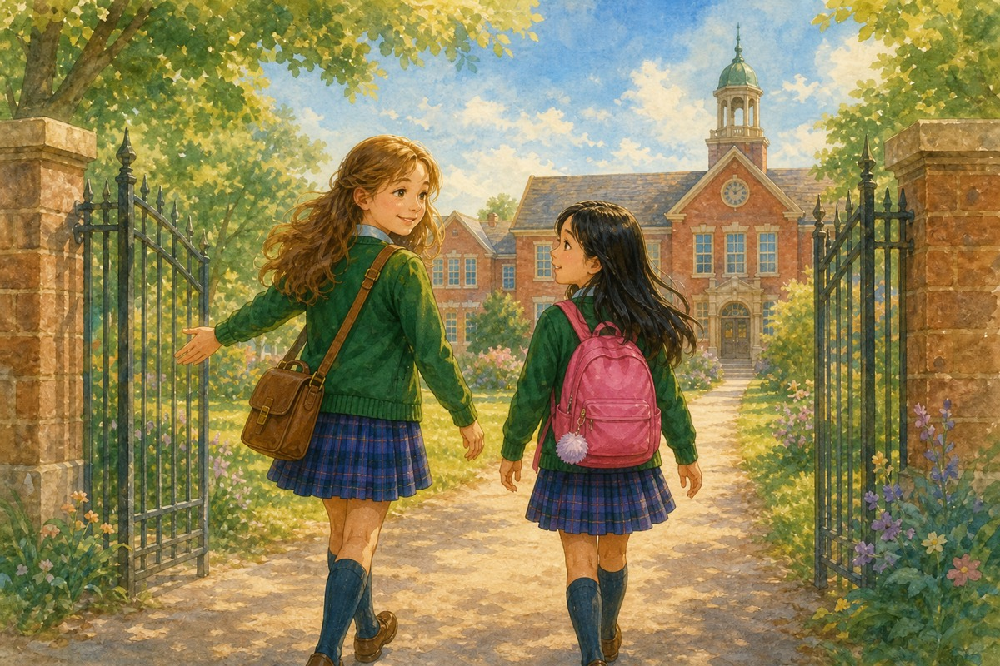
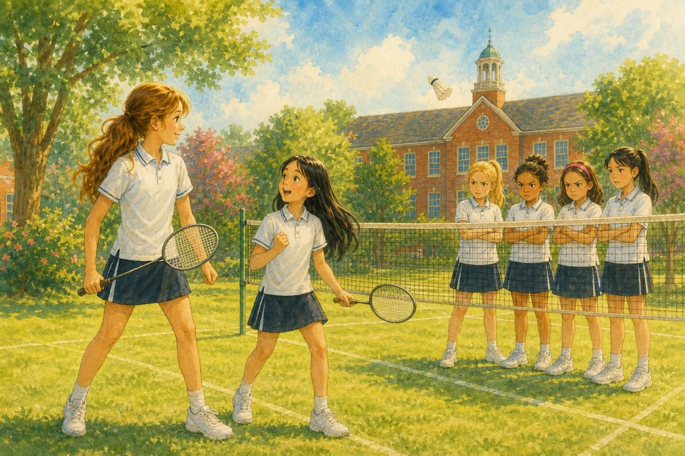
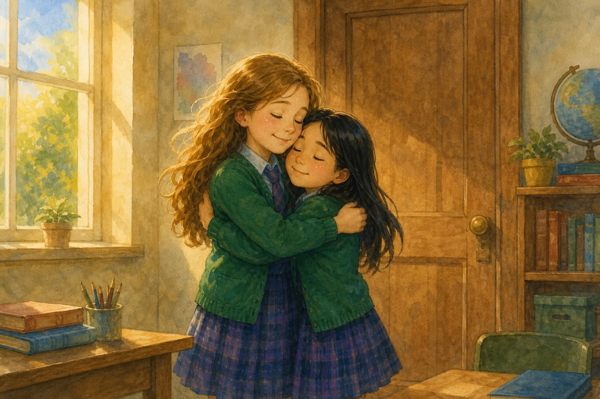
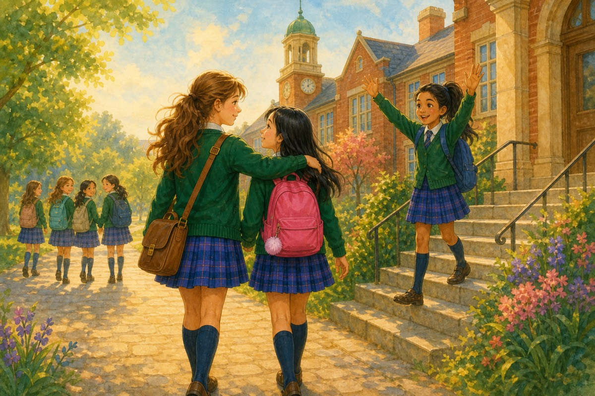

The Shy Girl & The Popular GirlA Vivian & Hazel story
A Vivian & Hazel story. Next: A Play of Their Own.
Vivian is excited to start school again — and even more thrilled to help and make friends with new girl Hazel. But do Vivian’s friends approve of Hazel, or even let her be Hazel’s friend? There’s drama for sure. Join them on this roller coaster of friendships, quarrels, badminton tryouts and much more.
A story about choosing kindness — even when it isn’t the easiest thing to do.
Chapters
The New Girl
Vivian
I walked into the school gates, eager to start the new term. I was a popular girl. I had quite a lot of friends that included Bella, Josie, Raya, Rose and Lara. We had been good friends for a long time now, and I was looking forward to seeing them.
As I entered, I saw a new girl, probably my age, looking shy and scared. “Do you know the way to class VI D?” she asked hesitantly.
“That’s my section. Follow me — we can go together,” I replied. I like figuring out new girls and seeing if we could mingle. That’s how I’d gotten all my friends so far. But how I was going to be friends with this shy girl, I really didn’t know.

As we went, I asked her, “Why did you shift to this school?”
“Umm… we shifted nearby, so it was easier to come here than to go to my old one,” she said.
“I think you’ll fit in well here. The teachers are nice and there are a lot of nice people you can make friends with,” I said.
“That’s good to know,” she said in a cheerful, happy voice.
I have to admit, as I talked to her, I did like her a bit. But she’s so shy — and I’m the popular girl.
Or can I?
Hazel
I entered the gates rather nervously. This new school was rather scary. To make it worse, the reason I left my old school was so silly — what if someone here found out?
I saw a girl looking so happy and excited. Anyone would want to be friends with her. She looked at me curiously. I decided to try and talk to her. Maybe it would help, having her as my friend.
“Do you know the way to class VI D?” I asked, hoping it didn’t sound as shy as I was.
“That’s my section,” she said. “Follow me — we can go together.”
She was in my section! Maybe if I became friends with her, I wouldn’t have a problem settling in. So I rather liked her and chatted as friendly-like as I could. Except for one question — she asked me why I’d shifted my school.
I couldn’t tell her the real reason. I’d been too shy to make any friends. So I just told her I’d shifted. It was the best thing to tell her at the present time, at least.
And as we walked to class, I couldn’t help wanting to be her friend. She was friendly, kind, funny and cheerful. But she must be so popular. I’m so shy. She’ll never want to be friends with me.
Or will she?
The Differences, First Day
Vivian
I was thinking deeply about this new girl when all my friends surrounded me.
“Hello!” said Bella. “What’ve you been up to?”
As I was talking to them, I saw the new girl I had talked to and gave her a smile. She smiled back, a little shyly but warmly.
“Who’s that you smiled at?” asked Raya.
“Oh, just a new girl I talked to,” I said.
They studied her closely.
“She’s so shy,” said Josie.
“I don’t like her,” said Rose.
“Oh, she’s all right — a bit scared, but there’s nothing wrong with that,” I said quickly. “Anyway, let’s choose our seats.”
I chose the seat next to Josie. Not only that — the new girl was in the bench next to mine. We could talk easily. At one point I noticed Josie half-turn towards Hazel's bench, almost as if she was going to say hello — but one sharp look from Rose was all it took. Josie faced forward again and that was that. Our class teacher seemed a nice person.
“What’s your name?” I asked the new girl.
“I’m Hazel. Nice to meet you,” she said.
“I’m Vivian,” I told her.
I liked Hazel, but couldn’t say so or talk to her properly, for Josie kept distracting me. It was clear that none of them wanted anything to do with the new girl.
The day sped by quickly. The teachers either asked us about our summer or played a game with us. It was all very satisfactory. I only wish I could have talked to Hazel more.
Hazel
As soon as we entered class, a lot of girls rushed to say hello to my new friend. I was right when I’d guessed she was popular. She’s so lucky. I’m sure nobody will want to be friends with me.
I noticed her friends staring at me. What do they think of me?
I learnt that her name was Vivian. I tried talking to her, but her friends kept distracting her every time she tried. I could tell she wanted to talk to me. I was touched by this, but hurt that her friends didn’t like me.
Our class teacher was very nice. The day went quickly enough — but I wished I could talk to Vivian more.
The Class Project
Vivian
The first few days of school were fun, but soon real lessons began and we were assigned a project: to talk about the importance of trains. I wondered who my partner would be.
We had to randomly pick people from a box of chits by our teacher. I got Hazel, which was lucky for me. Hazel and I met at my house today to discuss the project.
I must say, if you get through her shy side, she is very amiable and nice. I do like her, but it’s a pity my friends don’t. They think I’m being silly to want to be her friend, though I don’t know why.
It is a nice change to have Hazel to talk to. The others are nice, but they have an opinion about everything — and they don’t even look at Hazel.
Discussing our project was fun. My mum liked Hazel and provided us with yummy snacks. It was all very fun. And to make it even better, we got a round of applause and an A+ the next day!
Hazel
When our teacher gave us the project and announced Vivian as my partner, I was super happy. Vivian was the only other person who liked me, except for Alice, my other friend.
After school, I went to her house to discuss the project. We argued for a good ten minutes about whether steam engines or electric trains were better — Vivian said steam was more dramatic, I said electric was smarter — and in the end we put both arguments side by side in our slides. I think ours was the best project. After that, we played UNO, and Vivian’s mum provided us with lots of snacks. I liked her mum. She was friendly, kind, generous and cheerful.
And in school, everyone liked our project and we got good grades. I think I’m finally starting to settle in. The only things that bother me are her friends. It’s clear that they don’t like me, and they won’t even let Vivian speak to me.
I wish Vivian was my BFF. We are friends, but those other girls are too mean. Still, I had a good time with her.
Maybe we’ll be BFFs one day.
The Party
Vivian
When I went to school today, Hazel approached me and said, “Can I ask you something?”
“Sure,” I said, wondering what she wanted to ask me.
“It’s my birthday tomorrow and I’m having a party. Would you like to come?” she asked.
“Of course! I’d love to attend your birthday party!” I said happily. I’d not attended a party in a long time, and since Mum already met Hazel, she would definitely allow me to go.
I waited eagerly for the next day, and finally it arrived. At the party, I met Alice and her parents. Alice sat right next to Hazel for the first game and made sure she always had a partner. “Someone’s got to look out for the birthday girl,” she told me cheerfully. I decided I rather liked Alice.
I couldn’t help noticing that the guest list was quite short. When I asked Hazel why none of her friends from her old school had come, she said, “I called a few of them, but they’re busy, you know. They’ve probably forgotten all about me.”
I was rather surprised by the way she answered the question and decided not to ask her more about her old school. Maybe she was just missing her old friends.
I met a snobby cousin called Ria who came to our school. It was clear Hazel didn’t like her — nor did I. We played many fun games and ate a lot of delicious food. Overall, it was a great party and I enjoyed myself a lot.
Hazel
When I asked Vivian if she’d come to my party, she seemed super excited. I invited Alice too, for she was my other friend. I didn’t invite anyone else. I didn’t have any friends in my old school.
I just invited a few of my relations, including my snobby cousin Ria. She also came to our school, and all through the party I kept watching her out of the corner of my eye, afraid she would blab about my secret to Vivian. Fortunately, she kept her mouth shut, but was still extremely snobby and irritating.
Vivian asked about my old school friends. I guess she was wondering why the guests were a bit fewer than at normal parties. I just told her they couldn’t make it. She looked a bit surprised, but soon forgot about it (I think).
We played games, ate food and had fun. It was a good party — and a nice change to have Vivian and Alice to myself.
The Badminton Team
Vivian
Today, Hazel and I went to school excitedly. The PE coaches were selecting the school badminton team for a competition, and we both were good at badminton and hoping for a place in the team.
When we had PE class, I was assigned to play with a boy called Josh. I easily won the match. Hazel played well against her opponent and won too. So did all my friends — and Hazel’s cousin Ria. Since we played well, we all got spots in the team.
I was so pleased, though I do wish Ria wasn’t in the team. We were having a celebration at my house today, and Ria was trying to make things uncomfortable for Hazel. Not only did she become friends with my friends, but she also told false claims about her.
I clearly heard her say, “OMG! I went to Hazel’s party and it was so bad. There were hardly any people, too-boring games and disgusting food too. She probably wants to ill-treat us.”
And to make things worse, my friends believed everything she said — Josie nodded along before Ria had even finished — and decided to add her to our group! I was so disgusted that I took Hazel to the park. We pretended we didn’t hear a thing Ria said — but inwardly, we knew we had!
Why, oh why, did she get in the team???
Hazel
Today Vivian and I went to school quite happily. It was badminton tryouts day. I loved badminton and had been playing it for a long time — ever since I was young, six years old. I felt excited to show off my skills, but couldn’t help seeing Ria and Vivian’s friends staring at me scornfully.
Oh no — did she say something about me to Vivian’s friends? I thought. But then I pushed the thought away from my mind. They already hated me so much — why should I bother about it? Also, Vivian hadn’t noticed this, and I didn’t want to interrupt her. It would be better to just ignore Ria.
The tryouts were great. I got a spot, so did Vivian and her friends. And most annoyingly, so did Ria. Ugh! It was bad enough to have her in the same school, and now she was in the badminton team too!
But I cheered up a little when Vivian invited me to her celebration party. Well, at least I was a bit cheerful. Then I noticed Ria was talking about me with Vivian’s friends. I think Vivian noticed I was feeling uncomfortable, as she asked me if I wanted to go to the park with her. She’s so kind!
I agreed and we quickly walked out of her house. I pretended I didn’t hear a word of what Ria said. So did Vivian. I guess she didn’t want me to feel any worse than I was. I really do like her. But deep down we could still feel the tension.
Why did Ria have to spoil everything!???
The Awful Practice
Vivian
Oh my God! I knew things were not going to work out between Hazel and my “friends” (which now includes Ria) — but I didn’t expect it to escalate so soon! I still can’t believe all the drama that happened today.
We were all practising our badminton skills. Hazel was probably the best amongst us. Bella got jealous of her and challenged her to a match. Hazel hesitantly agreed, and I was a bit sceptical about this. Bella hates losing, and even though Hazel was good, Bella could be really hard to beat when she’s playing.
Near the end of the match, Bella smashed hard to the back corner — Hazel had to sprint backwards and nearly lost her footing — but she steadied herself, flicked the shuttle crosswise and won the point cleanly. Her footwork was brilliant.
But to everyone’s surprise, Hazel beat her easily. And now you’d think Bella would back out, right? But no, she didn’t. Instead, she called Raya, Josie, Rose, Lara and Ria, and asked Hazel to play against all of them. (I officially think Bella’s just rude.)
I felt sorry for Hazel, looking pale and frightened, so I offered to join her side. I knew my friends were going to be mad at me, but they were being too mean for words.

And just as I thought things couldn’t get any worse — they did! I could tell they were all jealous of my friendship with Hazel, and I wondered, Could they be thinking of ways to break my friendship with her?
My question got answered the very next minute. Ria and my friends were glaring at Hazel scornfully, and Ria approached me saying, “Vivian, I think it’s time I reveal to you how cowardly Hazel is.”
Hazel turned pale. “You can’t, Ria — please don’t!”
“I can, and I’m going to,” continued Ria. “Hazel shifted from her old school because she was too scared and shy to make a single friend.”
“I tried to,” said Hazel.
“You should have tried harder then. At that time, everyone thought she was snobbish and left her alone.”
“Why? You never gave me a chance to be myself!” Hazel gave back.
“I’m surprised you can even say this much, Hazel. In our old school she was just snobbish and cowardly. Now, Vivian, I advise you to break your friendship with Hazel at once. She doesn’t deserve you as her friend,” finished Ria.
Hazel
Today was the worst day ever. I can’t believe or understand why my own cousin wanted to expose me like this — but she did.
Today we were peacefully practising our badminton skills. I was quite good, if I’m being honest, and more importantly, I was enjoying myself. But this happiness only lasted a short while.
Bella approached me and asked me to play a match with her. I was surprised to see that Bella was taking notice of me, yet suspicious, as I didn’t want to interact with her. After a few minutes of thought, I agreed.
Bella was quite good, but I easily beat her. I had quite a lot of experience at this, and I used some of the best techniques I’d learnt. But I expected Bella to shake hands or congratulate me, like I did when I lost. Instead, she called her whole gang (including Ria) and asked me to play with all of them at once. Talk about unfair people.
I expected Vivian to go join them, but she didn’t. Instead, she stayed with me. I felt so grateful she was there on my side, as seeing that gang look so threatening had frightened me.
But things quickly escalated from there. They all huddled together and began discussing something. When they finished, they all looked at me scornfully. I wanted the floor to eat me up so badly. What were they going to do now?
Ria neared Vivian and — oh, I can’t even think of all the things she said — she exposed my past in the school I used to go to. I tried retaliating, but nothing stopped her. When she finished, she asked Vivian to join her. My heart sank.
Would Vivian abandon me and join them??? Or would she stay on my side???
The Confrontation Talk
Vivian
My mind was really confused. Who were my true friends in this room? This was a question I’d been trying to avoid since I’d become close with Hazel, but now I knew I had to answer it.
Bella, Josie, Rose, Raya and Lara had been my friends for five years, but I didn’t want to leave Hazel. We had just become close, and I really liked her.
I decided to have a private talk with Hazel and with my friends to figure out the solution of the puzzle. Everyone agreed with this solution, and Hazel and Bella did rock-paper-scissors to find out who would talk with me first. Hazel won, and all the others went out of the room. The two of us were alone.
“Vivian, I’m sorry I didn’t tell you earlier. I really just wanted to make a good start at this school, and thought that if I told anyone, I’d be alone again. You’re my only true friend — please don’t leave me,” she said. Then she sighed. “Well, Bella, Josie, Raya, Rose and Lara have been your friends for a long time. I guess you’ll have to go with them. But even if you do, I want to thank you for being a true friend to me, for sticking by my side and for making happy memories with me.”
I couldn’t help feeling awfully pleased and touched by this speech.
“Thanks, Hazel — it means a lot to me. I’ll always be your friend. I’m sure I can make the others agree and let me be your friend,” I said to her.
“Well, good luck,” she said to me.
“Thanks,” I replied as she walked out of the room.
Next, when my troop came in, they looked determined to get what they wanted.
“You saw what a coward she is — why should you even talk to her? Stay on our side and you’ll see what I mean,” said Ria.
“Vivian, that girl doesn’t deserve you as her friend. You two are complete opposites,” said Bella.
“I’ll come back to you in a minute. I need to think,” I said, and heaved a sigh of relief as they left.
Now for the think.
Even though those five girls had been my friends for five years, there was no true friendship between us — just common opinions about Hazel. And unlike Hazel, they didn’t even think about how I feel.
I’d known Hazel for only a month, but there was something warm, friendly, kind and open between us. And what those six girls (including Ria) did to Hazel was very mean. Ria is a really bad influence on them.
So what if Hazel tried to hide her past? It was only to find out if she was a likeable person or not. Maybe she’d have told me herself sooner or later, if it wasn’t for Ria.
I knew leaving Hazel alone was the easiest option — but would it work long term? I needed to do what was right for me, not for everyone else.
And so I came up with my solution.
Hazel
When Vivian suggested her “private talk” idea, I agreed immediately, as I knew it was fair. We played rock-paper-scissors to find out who would talk with her first, and I won. The six girls went out of the room, and only Vivian and I were alone.
All the memories I’d made that month flashed back to me, and I remembered how Vivian had stuck by me, even when it wasn’t the easiest thing to do. I knew if she left me, I’d really miss her — but I couldn’t blame her, as they were her friends first.
But just because you met a person first doesn’t mean you have to choose them over others… or does it?
If I was Vivian, I’d go with what my heart said. But I wasn’t Vivian. I was Hazel — the new, shy girl who was probably going to lose her only best friend. (Alice was my friend, but not as close as I was to Vivian.)
I decided that I would at least thank Vivian before she left me, because without her, I don’t know where I’d have been now. So I said my thanks as graciously as I could without sounding too shy.
Vivian said she’d always be my friend and would convince the others, but I wasn’t too sure about that. All the same, I think she’s really kind. I can’t do without her. How will I manage the rest of my school year all alone, without anyone to share secrets, invite home, play with and confide in?
But as I walked outside the room and watched the others go in, I knew all I could do was wait.
The True Friend
Vivian
I walked into the crowd of people. How was I going to announce my decision? But there was no other option but to conquer my stage fear. (Oh, come on — you’re scared of seven people?)
“I have put in a lot of thought into my decision, and I hope you all accept it as graciously as you can,” I said. “Bella, Josie, Ria, Raya, Lara and Rose — I know you all think I ought to choose your side. Yet I’ve known you all since a long time… but what you did to Hazel was terrible, and there is, nor will there ever be, any true friendship between us.
“Bella and Ria just make all the choices, and the rest of you just agree with them. I don’t think you need or want me — so I am going to stick by Hazel.”
“What! You’re going to stick up for that nasty, double-faced girl? What has happened to you, Vivian? You are surely joking. You’ve only known her for a month!” exclaimed Bella.
“So what if I have known her for a month!” I exploded. “She has shown me kindness, respect and fondness that none of you have ever felt towards me! So what if she didn’t tell me her secret? She probably would have confided in me herself if you hadn’t interfered in this matter — which, by the way, didn’t even concern you in the first place. Mind your own business, and don’t poke your nose into somebody’s private affairs unless you do it for a good cause!”
There was a silence in the room.
“Fine! Go stick up for that horrible girl. I don’t care,” said Ria.
“Nor do I care a tuppence about you!” I shot back.
We exchanged glares, and they went out of the room. When the door shut, I felt arms hugging me. It was Hazel!
“Thank you, Vivian — you really are the truest friend there ever was.”
“Same to you,” I said, hugging her back.

Hazel
When Vivian stepped out of the room, I couldn’t help feeling nervous. Vivian would surely leave me alone and join her old friends again — and then what was I to do?
As frightened as I was, I thought it was for the best. At least none of her friends would glare at me, or think I was preventing Vivian from speaking to them. I had to stay strong and think positive. Maybe I’d forget all this trouble, and soon things would blow over and be how it used to be in my old school.
I wasn’t completely friendless, though. I still had Alice. But somehow, I kept wishing and praying Vivian would still be my friend.
Vivian looked a bit scared as she gazed at us. I couldn’t blame her. Who wouldn’t be if they were in her shoes?
But I got the shock of my life when Vivian chose me instead of them. I had to pinch myself twenty times to even believe I wasn’t dreaming. I looked at Vivian admiringly. She was so brave — always following what she thought was right.
And as the others left the room, I couldn’t help hugging her. How nice it would be to have Vivian by my side. One day, I’d pay her back for all she had done for me.
And now we are walking home together, arm in arm. Who knew that I would actually find a true friend? Who knew Vivian would choose me over the others? And who knows what will happen in the future?
Well, whatever happens, I know Vivian and I are going to be the best of friends forever. I can feel it in my bones!
But now, I’m going to enjoy this moment — the moment I got my first true friend.
The next morning, we walked into school together. Alice was waiting on the steps and gave us both a big wave. Bella’s group was ahead on the path — they glanced over, then looked away and kept walking. Vivian squeezed my arm. I squeezed back.
Isn’t it just wonderful? Unbelievable?
The End
Two girls. One choice. A friendship that felt right.

A Play of Their Own

A school play, a rival, and a sister’s secret.